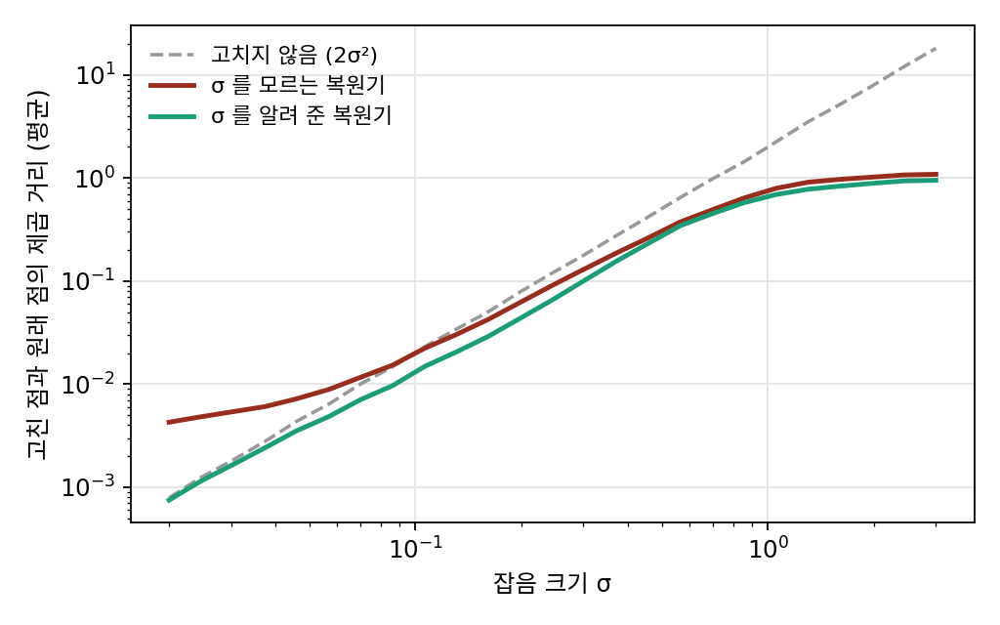

조건부 디노이징: 얼마나 망가졌는지 함께 알려 주기
잡음 크기 σ 마다 복원기를 따로 두면, σ 를 촘촘히 나눌수록 신경망이 늘어난다. 신경망 하나가 모든 σ 를 고치게 하려면 σ 를 여러 값으로 섞어 학습하면 된다. 그런데 고칠 때 σ 를 알려 줄 것인가, 말 것인가? 알려 주지 않으면 복원기는 망가진 그림만 보고 얼마나 망가졌는지까지 스스로 짐작해야 한다.
왜 2차원 고리인가
숫자 그림은 784칸이라 고친 자리를 그림으로 그릴 수 없다. 그래서 숫자 두 개짜리 데이터를 쓴다. 데이터는 반지름 1인 고리 위에 두께 0.06쯤으로 놓인 점들이다. 2차원이면 망가진 점과 고친 점을 한 평면에 그릴 수 있고, 점 하나가 숫자 두 개뿐이라 얼마나 흔들렸는지를 점 스스로는 거의 말해 주지 못한다. σ 를 모르는 복원기에게 가장 어려운 무대다.
같은 점, 다른 σ
고리 데이터에서 σ 를 0.02에서 3까지 섞어 MLP 두 개를 학습했다. 하나는 망가진 점만 받고, 하나는 log σ 를 함께 받는다. 망가진 점 (1.3, 0) 하나를 σ 를 알려 준 복원기로 고쳐 보면 이렇다.
| 알려 준 σ | 0.05 | 0.3 | 1 | 3 |
|---|---|---|---|---|
| 고친 점 | (1.15, 0.00) | (0.98, 0.00) | (0.55, 0.00) | (0.07, 0.00) |
σ 가 작으면 고리 바로 바깥에서 조금 흔들린 점으로 보고 거의 그대로 두고, σ = 0.3 이면 고리 위로 끌어오고, σ 가 크면 어디서 왔는지 모르니 고리 전체의 평균인 가운데 쪽으로 끌어온다. 같은 점인데 σ 에 따라 고칠 자리가 다르다. σ 를 모르는 복원기는 이 점을 (0.83, 0.00)으로 고친다. 여러 σ 의 경우를 섞은 어중간한 답이다.
세로 막대 오른쪽에 아는 것을 하나씩 더 놓을수록 평균을 내는 무리가 좁아진다. 이렇게 망가진 그림과 함께 잡음 크기나 라벨 같은 조건을 받아 고치는 일을 조건부 디노이징 (조건을 함께 받아 고치기 / conditional denoising)이라 한다. 고리에서 고친 점과 원래 점의 제곱 거리 평균은 σ = 0.05 에서 σ 를 알려 주면 0.0040, 모르면 0.0079다. 고치지 않고 두는 것(0.0050)보다도 나쁘다. σ = 3 에서는 알려 주면 0.955, 모르면 1.089로, 모든 점을 그냥 가운데 원점에 갖다 놓는 것(1.007)보다 나쁘다.

ML에서: 조건이 들어가는 자리
이 장의 복원기는 log σ 와 라벨을 망가진 그림 784칸 뒤에 이어 붙여 받았다. 조건이 무엇이든 받는 자리는 같다. 조건이 글 한 줄이나 참조 그림으로 바뀌면 이어 붙이는 방법만 달라진다.
문제 4. 두 온도계
우리 동네의 이맘때 기온은 평균 15도, 표준편차 2도로 오르내린다. 기록 장부에는 날마다 두 온도계 가운데 하나로 잰 값이 적히는데, 싼 온도계는 참 기온에서 표준편차 4도, 좋은 온도계는 1도만큼 어긋난다. 어느 온도계를 쓰는지는 반반이다. 오늘 장부에 18도가 적혀 있다. (가) 싼 온도계로 쟀다는 것을 안다면, 참 기온의 짐작(제곱 오차가 가장 작은 값)은? 좋은 온도계라면? (나) 어느 온도계인지 적혀 있지 않다면? (다) 날마다 이렇게 짐작할 때, 온도계를 알 때와 모를 때 제곱 오차의 평균은 얼마나 다른가?

18도라고 적혀 있으니 18도요. 온도계가 무엇이든 읽은 값이 제일 정확하죠.

싼 온도계는 4도씩 틀린다면서요. 18도가 「참 기온이 높아서」인지 「온도계가 틀려서」인지는 어떻게 가르죠?

기온 자체의 흔들림이 분산 4, 싼 온도계의 어긋남이 분산 16이에요. 평년에서 3도 벗어난 것 가운데 4/(4 + 16) = 0.2만 기온 탓으로 믿으면 15.6도. 좋은 온도계면 4/(4 + 1) = 0.8을 믿어서 17.4도예요.

같은 18도인데 15.6도랑 17.4도면 꽤 다르네요. (나)는 둘의 가운데 16.5도쯤이요?
18도가 어느 온도계에서 나왔을 확률을 먼저 따져야 해. 계산하면 싼 온도계일 확률이 0.495라서 거의 반반이고, 그 비율로 섞으면 16.51도야.

(다)는 시뮬레이션으로 해 봐요.

이백만 날로 돌렸어요. 읽은 값 그대로면 8.48, 온도계를 알면 2.00, 모르면 2.52예요. 좋은 온도계로 잰 날만 보면 0.80 대 1.46이라 거의 두 배고요. 모를 땐 좋은 온도계 값도 괜히 평년 쪽으로 끌어당기니까 손해를 봐요.
고리에서 σ 를 모르는 복원기가 σ 가 작을 때 고치지 않느니만 못했던 거랑 같아. 조금만 흔들린 점을 많이 흔들린 점일 수도 있다며 괜히 옮긴 거지.
문제 5. 784칸이면 σ 가 보인다
MNIST 에서도 σ 를 0.02 ~ 4 에서 섞어 복원기 두 개를 학습했다. 하나는 log σ 를 함께 받고, 하나는 받지 않는다. 시험 그림의 제곱 오차 합 평균은 아래와 같다.
σ 0.05 0.25 1 4 σ 를 모름 2.29 4.30 18.68 46.96 σ 를 앎 2.25 4.35 18.69 46.87 (가) 고리에서는 σ 를 알려 주는 것이 큰 차이를 냈는데, 여기서는 왜 거의 같을까? (나) 잡음만 든 칸 n개의 제곱을 평균 내어 σ² 을 어림하면, 그 어림은 σ² 에서 상대적으로 얼마쯤 흔들리는가? n = 2 와 n = 784 를 견주어라. (표준정규 잡음 하나를 제곱한 값의 분산은 2이다.)
학습이 잘못된 거 아닐까요? σ 를 넣어 줬는데 아무 효과가 없으니까요.
그럼 σ 를 모르는 복원기는 σ 를 어떻게 알아냈을까요? 망가진 숫자 그림을 눈으로 보면 σ 가 0.5인지 2인지 알 수 있어요?
아, 보여요. 바탕이 얼마나 지글지글한지 보면 바로 알죠.
(나)를 계산하면, 칸 n개의 제곱 평균은 평균 σ², 분산 2σ⁴/n이라서 상대 흔들림이 √(2/n)이야. n = 2 면 100%, 아무것도 모르는 거나 같아. n = 784 면 5%고, σ 자체는 그 절반인 2.5%쯤 흔들려.

실제 그림으로 해 봤어요. 원래 그림의 제곱합 평균(87.81)을 빼고 784로 나눠서 σ 를 어림했더니 σ = 2 에서 2.7% 흔들려요. 그런데 σ = 0.5 에서는 8.4%, σ = 0.1 이면 97%나 돼요.

σ 가 작으면 잡음보다 그림마다 잉크 양이 다른 게 더 크니까 내 어림법이 무너지는 거야. 그래도 복원기는 오차가 똑같았어. 칸끼리의 모양을 보고 더 똑똑하게 읽었겠지. 2차원 점은 그럴 칸이 없고.

그래요. 2025년 쑨(Qiao Sun), 장(Zhicheng Jiang), 자오(Hanhong Zhao), 허(Kaiming He)는 「잡음을 조건으로 꼭 줘야 하는가?」라는 논문에서 그림 생성 모델들에서 잡음 크기 입력을 빼 보았어요. 그림처럼 차원이 큰 데이터는 망가진 그림만 보고도 잡음 크기를 믿을 만하게 어림할 수 있다는 것을 근거로 들었고, 대부분의 모델은 조금만 나빠졌지만 크게 무너진 경우도 있다고 보고했어요.
통계 시간에 표본이 많아야 분산을 믿을 수 있다고 배웠는데, 여기서는 칸 하나하나가 표본이었구나.
문제 6. 라벨까지 알려 주면
같은 MNIST 복원기에 라벨(0~9 의 원-핫 10칸)까지 함께 주도록 하나 더 학습했다. 거의 순수한 잡음인 σ = 4 로 망가뜨린 시험 그림을 고친 결과는 이렇다(제곱 거리).
고친 그림 ↔ 원래 그림 고친 그림 ↔ 전체 평균 그림 고친 그림 ↔ 그 라벨의 평균 그림 σ 만 앎 46.89 7.70 σ 와 라벨을 앎 38.44 15.30 6.37 σ = 0.25 에서는 두 복원기의 오차가 4.33 과 4.30 으로 거의 같다. (가) σ = 4 에서 라벨을 알려 준 복원기는 무엇을 내놓는가? (나) 라벨은 왜 σ = 4 에서는 크게 듣고 σ = 0.25 에서는 거의 듣지 않는가?
(가)는 표 그대로예요. 라벨을 알면 그 라벨의 평균 그림이랑 6.37밖에 안 떨어져 있어요. 「3」을 주면 3들의 평균 그림이 나오는 거죠.

그거 라벨을 넣고 그림을 받던 MLP 랑 똑같은 그림이잖아. 그때도 3들의 평균을 그렸지.
같은 그림이 같은 까닭으로 나온 거예요. 그림이 거의 다 지워졌으니 남은 정보는 라벨뿐이고, 라벨만 아는 복원기의 최선은 라벨의 평균이에요. (나)는요?
σ = 0.25 그림은 눈으로 봐도 무슨 숫자인지 다 보이니까요. 라벨이 알려 줄 게 이미 그림에 들어 있어요.
조건이 얼마나 쓸모 있는지는 망가진 그림이 아직 말해 주지 않은 것이 얼마나 남았느냐에 달렸네. 다 지워진 그림에는 라벨이 큰 몫이고, 멀쩡한 그림에는 라벨이 보탤 게 없어.
시험 문제에 힌트를 줘도, 이미 아는 학생한테는 소용없고 하나도 모르는 학생한테만 크게 도움이 되는 거랑 같네요.